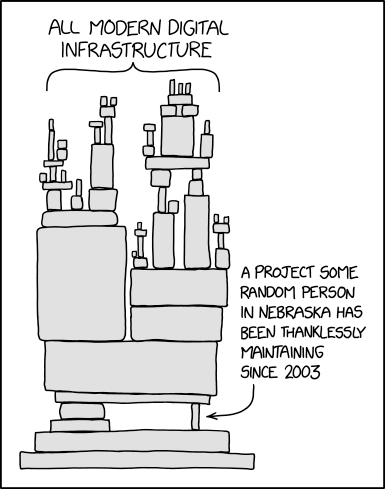

Background on Computational Languages in Economics
Computer Languages in Economics
A range of computer languages are currently in use in economics, and in your own reasearch career, if you are conducting empirical research, it is likely that you will use a number of languages. What we will spend most of our time working on in this course are languages with scientific programming capacities. These languages will generally be designed to – or have certain aspects designed to – work with data, conduct numerical calculations, and, ideally, have a set of inbuilt statistical routines which we frequently encounter in economics. Ideally, as well as allowing us to conduct our research, the languages we work with will allow us to generate the types of exhibits we would like to communicate our research with our peers: things like tables and figures.
In modern economic practice, I believe that the most frequently used statistical programming languages (in alphabeticl order) are Julia, Matlab, Python, R and Stata. Among these, Julia is newer and less adopted, but may take off in the years ahead. This is not to say that you will not encounter other languages in your career. Other languages are indeed used. For example, many old structural models are written in Fortran, and certain sub-fields in economics may use other languages such as SAS, OxMetrix, Mathematica, SPSS and other tools.
One may ask why so many languages exist? Languages are designed with different philosophies, and often new languages are developed to remedy perceived shortcomings of older languages. Originally, computer languages were low level. Low level languages are computational languages which require the programmer to think carefully about how the program they write interacts with a computer’s memory, and are generally more complex to write, but faster to run. Currently, all of the languages frequently used in economic research are high level. High level languages are written to take care of things like memory and hardware use, garbage collection, assignment of variable types and so forth, and so the programmer can simply focus on the task at hand. High level languages are generally faster to program in, but codes run more slowly. This is an “abstraction penalty” with moving to higher level coding – more is taken care of, but some cost is generally paid in terms of computing time. To see below the example of what the difference can look like between more low level and high level languages, refer to the following two codes to print “Hello World!” on the computer screen. The left-hand side is the code for Python, while the right-hand side is the code for C. Over time this movement from low to high level has implied a number of new languages have been developed.
Hello World in a High Level Language
print("Hello, World!")Hello World in a Low Level Language
#include <stdio.h>
int main() {
// printf() displays the
// string inside quote
printf("Hello, World!");
return 0;
}Another key reason why multiple languages exist is that some languages are written by companies to be sold, while other are written to be open source and increase access to scientific tools without payment. Commercial languages are produced with paid developers, and generally offer high quality documentation and warranties on performance. However, large open source languages have many active contributers (working on a voluntary basis), and so are often able to match or exceed the performance of commercial languages, especially when it comes to rapidly incorporating new advances into their code base.
Finally, different languages generally have different focuses. For example, among the languages we will work with in this course, Stata is most focused on rapidly being able to work with data and perform statistical analyses, R has a somewhat similar focus but is open source, Python provides more control over a computer’s entire operating system, and certain other languages such as Matlab are designed specifically for matrix-based calculations (which are extremely frequent in economics). In general, languages will have specific design choices, and when you work with one or another they will have a different feel. A key distinction which we will see throughout the course is in how they deal with repeated calculations or processes. Certain languages are more structured to conduct repeated calculations in sequence, essentially “looping” around and doing one thing after another, while others are more structured to think in terms of matrices, applying a process in block to many cells of a matrix.
Some of the distinctions between languages which you may encounter are summarised in the Table below. Many of these categorisations are just my perception. For example, all computer languages are “fast” in that they can perform millions of calculations per second, but in my experience some or faster than others, and this may be relevant if you end up working on very computationally intensive projects. If you are interested in some more formal comparisons of languages, you may wish to read the paper by (Aruoba2015?) .
| Language | High/Low Level | Matrixy/Loopy | Active User Base | Free/Open Source | Fast? |
|---|---|---|---|---|---|
| Julia | High Level | Matrixy | Medium | Yes | Yes |
| Matlab | High Level | Matrixy | Yes | No | No |
| Python | High Level | Loopy* | Yes | Yes | No |
| R | High Level | Matrixy | Yes | No | No |
| Stata | High Level | Loopy* | Yes | No | No |
| Fortran | Low High Level | Matrixy | Not so much now | Yes | Yes |
| C/C++ | Low Level (C) | Loopy | Not so much in econ | Yes | Yes |
* Certain elements are optimized for matricial calculations (Numpy)
+ Certain elements are optimized for matricial calculations (Mata)
Considerations in Adopting a New Language
When you are learning a new programming language, many of the things you learn will be general knowledge that will also help you in other languages. For example, certain programming constructs such as the use of formal logic, control flow statements such as loops, the generation of functions and so forth will be something you encounter in nearly any language. However, there is also a non-trivial investment in language specific factors, for example the syntax of the language (the way the language is written and used), as well as the use of particular commands, will not cross over from language to language. For this reason, it is worth thinking about which is the best language for you prior to starting.
Generically, there is no right answer to this question as it depends on what you do and your own prefernces. There are, however, a number of considerations which I believe can help you decide which programming language is right for you. Among other things, relevant factors to consider include the following:
- What type of research will I be doing?
- Are there any relevant network effects (for example coauthors)?
- What is my current knowledge?
- What type of support do I look for?
- Do I have any deeper preferences to satisfy?
I will discuss these points briefly below.
1. What type of research will I be doing?
There are certain types of research where specific languags may be especially well suited to what you are doing. For example, if you plan to be largely working with and cleaning data and performing econometric analyses, you could conceivably work with Julia, R, Python or Stata (among others). However, Stata or R might be the most logical choices, because often these are the first place where new econometric routines turn up. Often econometricians or other applied reseachers release new tools in Stata or in R first, and then only later do they appear in other languages.
If, however, you plan to be working with more modern machine learning (ML) tools, Python or R are probably leaders here. While ML routines are also certainly available in Stata and Julia (among others), at the moment my feeling is that they are most well developed in R and Python, as they are often contributed by non-economists.
You may have other preferences, for example your research may involve solving formal optimisation problems, for example in structural work. In this case, the optimisation routines in Matlab may be particularly relevant. Julia may catch up to Matlab with optimisation routines, though at the moment my feeling is that Matlab is still the leader here.
One useful way to have an idea about the types of codes that might be relevant in particular research projects is to look at the replication materials that are available with papers that you read. If you see that they all are using a certain language, this may be a useful insight for you. One thing to note with this is that historically, much of the code base in economics has been written in Stata, so it is likely that this will feature heavily in many fields.
2. Are there any relevant network effects?
A highly relevant consideration in many cases is the need to interact with coauthors, supervisors, and so forth. Often, our decision about the language we use may be largely driven by the people we work with. For example, if all of my coauthors use one language and want to be involved in programming in a paper, it makes sense for me to also work in that language. Or if part of a paper is already written by another coauthor in a particular language, it may make sense to continue working in this language to ease the work flow involved in the project.
As mentioned above, historically a lot of work in economics has been conducted in Stata, and the network effects from this have meant that Stata remains highly relevant. It seems to me that more recently there is some broadening of the scope of languages used, and you should of course feel free to not be guided by what others do to make your choice. The relevance of network effects will probably be most relevant if you plan to be frequently involved in collaborative projects.
3. What is my current knowledge?
You may already know a programming language and feel comfortable in it. In this course, I will ask that you all work with a programming language that you have not worked with before, and we will discuss a range of languages thoughout the course. The reason for this is that this way it is guaranteed that we will all start at a reasonably similar base (even if people have never programmed before), and at the end of the course you will at least feel comfortable in a new programming language. Often the spillovers from one language to the next will depend a little bit on their structure. For example, if you have worked before with a matrix-oriented language such as Matlab, you may wish to work in R which has something of a similar logic. However, if you have experience in Python and like the idea of looping, Stata may be a more logical choice in terms of a new syntax.
4. What type of support do I look for?
A fourth point to consider is related to the support you want in your work. In the section below we will discuss more fully the types of support available for different languages, and this definitely depends a lot on the language. Certain languages have dedicated and extremely active forums where you can ask questions, and get feedback. Languages also differ in terms of the degree of quality of the manuals, the activity level of people in online forums, and the quality of responses in online forums. Another relevant point in this dimension is how well the languages are supported in large language models like ChatGPT. This will be discussed at more length below.
At present, my subjective opinion is that if we consider the languages Stata, Python, R and Julia, the ordering of support depends highly upon what type of support one seeks. In terms of quality of manuals, the ordering is probably something like – from best to worst – (1) Stata (2) R (3) Python and Julia. However in terms of support from ChatGPT it is probably (1) Python (2) R (3) Julia (4) Stata. And in terms of forums, specifically for relatively new users, the support available is probably ordered as (1) Stata (2) Python and R (3) Julia.
5. Do I have any deeper preferences to satisfy?
Finally, you may have deeper preferences. For example, you may appreciate the value of Open Source software, and prefer to opt for open source tools. A surprising amount of the current technological world is built with or on top of the contributions of open source software (see the comic below!), and you may wish to be part of this. You may also have other preferences which are relevant for you at the moment you decide.

How Should I Learn a New Language?
There are a number of tools which can help you in learning a new language, but by far, the most useful way to learning a programming language is by programming in it! Right at the beginning, it is useful to understand the minimum basic elements of the language, which is what we will focus on immediately after this section of the course. At all points, my suggestion would be to put in practice what you are learning, working with examples which are interesting to you. Personally, I would not endorse trying to perfect your knowledge of a language in theory before you put it into practice. Once you have a basic understanding of the language, in my opinion, the best thing you can do is to start working in it, and learn the particular things you need in your everyday usage by trying to do particular things of interest, for example generate graphs, examine data, and so forth.
There is an important caveats here, and this is that I would certainly not endorse using a language for a real paper before you are sure that you understand the key elements. There are certain elements of research projects which are critical, for example cleaning and joining data, and if done incorrectly can mean that your final results are entirely wrong. We will discuss these elements at more length later in the course, but for now it is worth keeping in mind that while learning by doing is an efficient way to figure out how a language works and how it doesn’t work, when you are dealing with real programs, it is important to build in checks throughout your work to ensure that you aren’t making mistakes. We will discuss this a little later in the course.
Beyond learnign by doing, there are a number of highly useful resources online that will help you get up to speed. We discuss these below.
Online Forums
A hugely useful source of information are online forums which let you ask questions, and suggest answers to questions if you know about a particular language. The most common forum is Stack Overflow where you can generate an account and ask questions about any language. These questions are often answered within minutes, and multiple responses can be provided, with individuals voting to highlight best answers. As well as a place to answer your own qustions, Stack Overflow is a hugely relevant resource to search for previous responses. Frequently, questions you may have are already answered on Stack Overflow, and can be found by searching Stack overflow or by using a search engine.
For certain languages, alternative forums exist. For example, the Statalist in the case of Stata has a much richer set of questions and answers than Stack overflow. This would be my first port of call for Stata-related queries, with the many questions already answered in the archives of the list. This can also be searched quite simply prior to asking a new question, and a well-established etiquette exists see here, for example.
Large Language Models
More and more, large language models (LLMs) like chatGPT and other Artificial Intelligence (AI) tools can help us with our programming tasks. Certain platforms also have AIs which can help you in developing your code, such as github’s copilot. If you are unsure of certain language constructs, using an LLM can be very helpful, though it is also important to generate your own understanding of the language alongside inputs from LLMs. It is also relevant to note that the quality of responses from LLMs will depend slightly upon the amount of data they have to learn from, though in general for most languages we encounter LLMs are do a good job.
My personal view is that you should avoid using these LLMs as a crutch. For the large majority of types of programming we will be doing in economic research, we will not want to be relying on vibe coding, nor outsourcing the thinking to LLMs. Of course, LLMs can help increase productivity and offer suggestions for ways to optimise code. Things like line completion in VS code and other constructs can be very helpful to speed up programming, but we must be vigilant in ensuring that we’re getting what we actually want. Actually learning how to programme the old fashioned way and knowing syntax off by heart offers considerable benefits in terms of understanding code, as well as more generally getting a feel for different programming constructs. It’s also useful for when you want to programme when you’re on the road with less access to wifi, or in settings without access to internet, such as data rooms maintained by governmental data providers.
Hardware and Operating Systems
While this course is focused on learning a scientific computing languages for research in economics, it is useful for you to have some understanding of the hardware you use, as well as make an informed choice about operating systems. While generally, current laptops have remarkable processing capacity, for certain types of projects you may run into bottlenecks either in terms of memory or processing power.
Hardware
Broadly speaking, and at a very high level of abstraction, there will be three particularly relevant elements for us when thinking about the hardware we use. The first is the processing capacity of the computer, which depends upon the Central Processing Unit, or CPU. The second is the virtual memory capacity the computer has to manipulate specific data bases, which depends upon the Random Access Memory, or RAM. And the last is the hard disk space and the type of hard disk used to store all of the data and programmes installed on the computer.
We will not discuss this in great depth, but it is useful to note that particular types of projects will imply demands on particular types of resources, and if you are deciding on what type of computer you need, this will be driven by the type of research you are doing. For example, if you are doing research which is particularly demanding in terms of numerical processing or in terms of calculations, the most important thing that you will want to consider will be the type and number of CPUs that you have. More recent generations of CPUs have greater processing capacities1 In extremely demanding projects where processing capacity is a limiting constraint, processing can even be done on the Graphical Processing Unit, or GPU, of your computer, though this is likely not relevant for the majority of projects in economics, so we won’t dig into it here. If, however, your research requires working with large databases, for example running regressions with many millions of operations, it is more likely that your bottleneck will be in terms of RAM. Given that you need enough RAM to hold databases in working memory, if you plan to work with databases of >16GB for example, you will require a machine with more than 16GB of RAM. Finally, though potentially less limiting, is the relevance of the hard disk. If you plan to store massive amounts of data on your computer (of the order of terrabytes), you may find that you run out of hard disk space. In general this is relatively easy to remedy by purchasing an external hard drive, but is also a choice which can be made when deciding on a computer to use.
Operating Systems
The operating system is the over-arching environment where we interact with all our programs, data management, and so forth. It is extremely likely that you will work with some flavour of Windows, OS, or Unix-based operating systems. Often, operating systems are bundled with hardware, and when you purchase your computer this choice will be made.
The simplicity with which you are able to program does vary by the operating system you choose. In my opinion, Unix based operating systems are by far the most flexible and most well-suited to scientific computing. However, there is a learning curve involved in getting up to speed with a new OS, and you may not wish to do this. Regardless of the choice of OS you make, all the tools we examine in the course will be available, and more generally, nearly all the computational tools you will require in economics can be somehow made to work on each type of OS.
CPU capacity is measured in FLOPS, or floating point operations per second. The capacity of computers has grown more or less constantly over time, with an ever growing increase in the capacity in the number of FLOPS. This has been characterised as Moore’s Law.↩︎